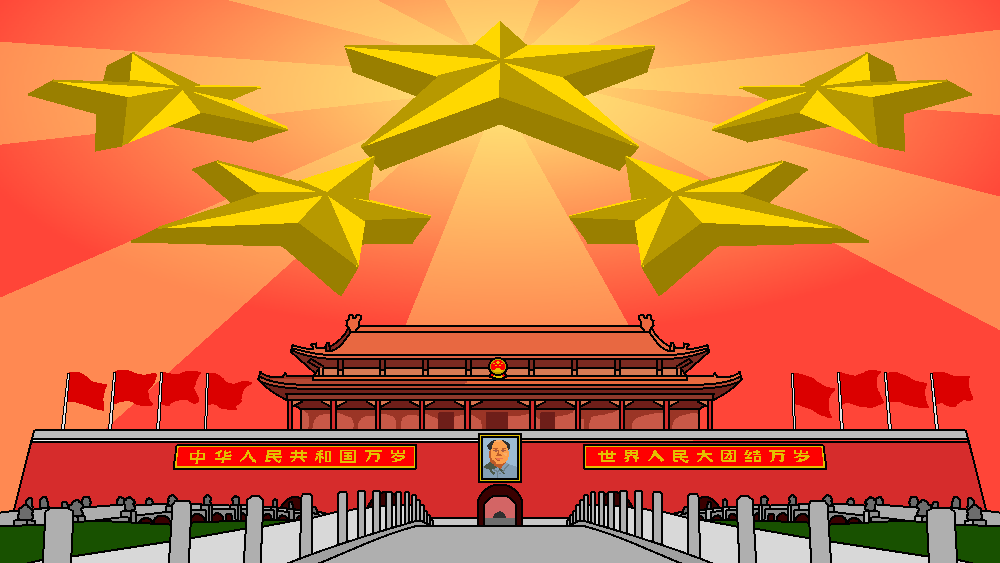

Hazel's Glossary
This is a short glossary of terms, acronyms, and etc. which I will commonly use in order to reduce clutter on my posts! Organized in no particular order. Please ctrl+F to find related term. If a term is not present in glossary, shoot me a message about it and I will add it to the glossary!
Acronyms and Initialisms
DoTB, DOTB
Dictatorship of the Bourgeoisie. Refers to states where the ruling class is the bourgeoisie with capitalism as its primary mode of production.
DoTP, DOTP
Dictatorship of the Proletariat. Refers to states where the ruling class is the proletariat. The state is working towards constructing socialism and may have elements of the previous mode of production in it.
GPCR
Great Proletarian Cultural Revolution (无产阶级文化大革命), refers to the period of approximately a decade between the mid 1960's and late 1970's characterized by both ultra-left movements and genuine peasant and proletarian development.
GGKF
Gai Ge kai Fang (改革开放), Reform and Opening up policy/period following the GPCR.
SEZ
Special Economic Zones. Refers to places like Shenzhen.
SAR
Special Administrative Region. Refers to Hongkong and Macau
AR (China)
Autonomous Region. Refers to places like Xinjiang, Tibet, Inner Mongolia, etc..
SOE
State Owned Enterprise. E.g., Norinco
Countries
PRC
People's Republic of China
DPRK
Democratic People's Republic of Korea. Also called "north korea" by reactionaries.
GDR/DDR
German Democractic Republic or Deutsche Demokratische Republik. Also called "east germany" by reactionaries.